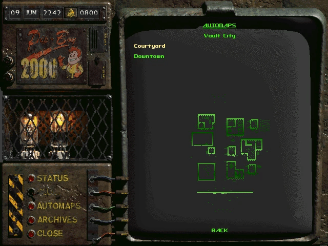
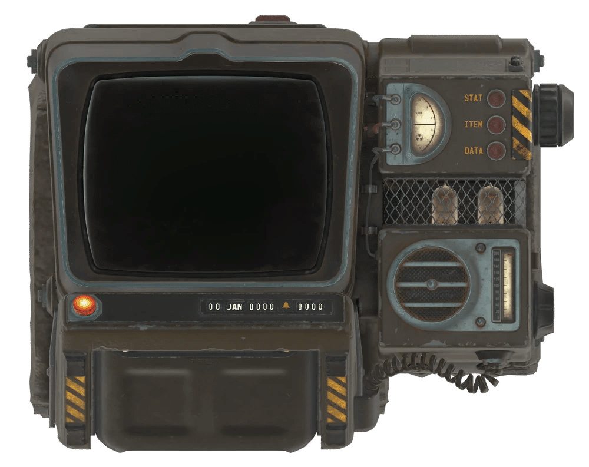
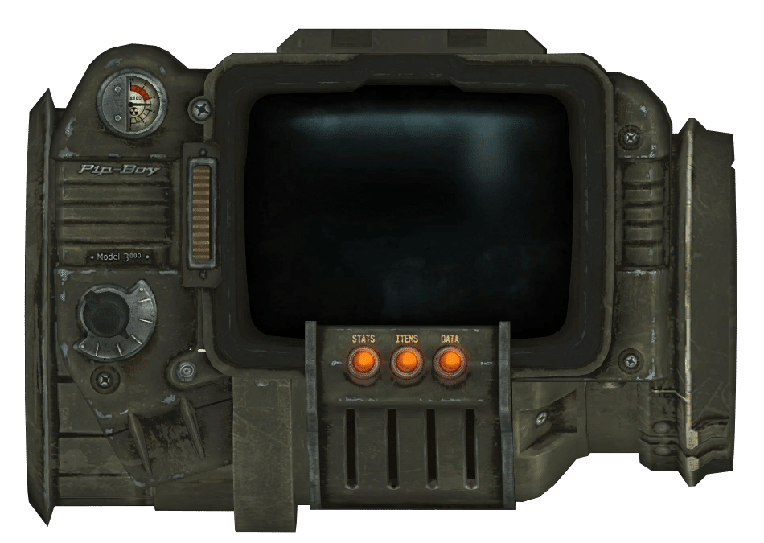
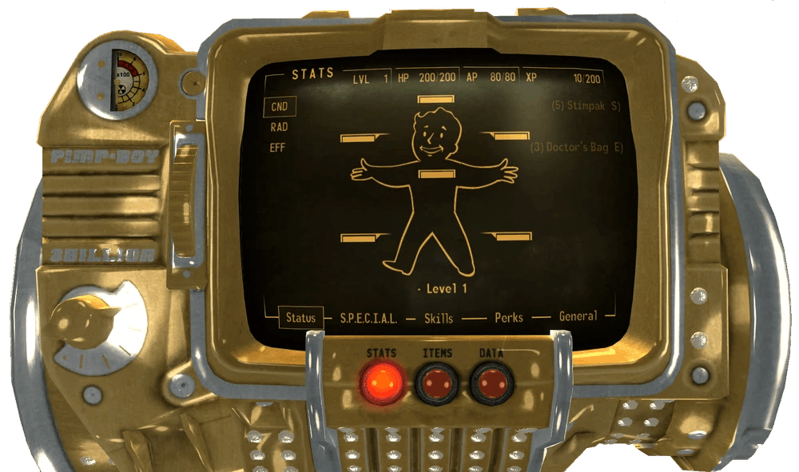
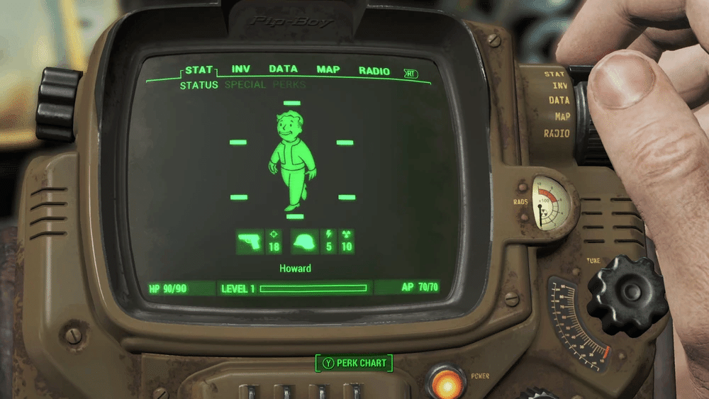
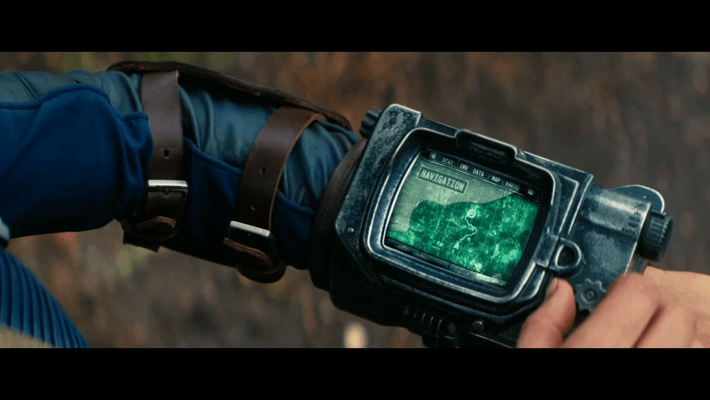
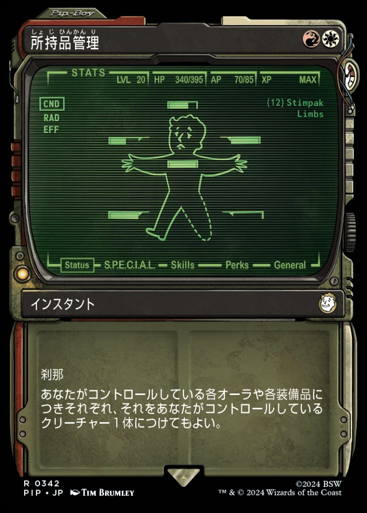
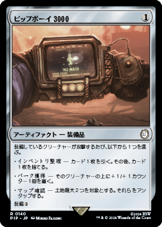

Pip-Boy
Fallout
Pip-Boyは、核戦争以前にRobCo Industries（ロブコ・インダストリーズ）によって開発された、着用可能なパーソナルコンピューターです。
「Pip」はPersonal Information Processor（個人情報処理装置）の略であり、Vault-Tec社のすべてのVault居住者に標準装備として支給されていました。
Pip-BoyはVaultの外で見つかることもありますが、大量の情報を保存・転送できる便利な機能と、内蔵のガイガーカウンターのおかげで、所有者が手放すことはめったにありません。
— 『Fallout』TVシリーズ Pip-Boyの伝承解説より
Pip-Boyは、RobCo Industriesによって製造された一連の着用型コンピューターです。
背景
Pip-Boyは、Bud Askins（バド・アスキンズ）が行ったRobCoとの取引により、Vault-Tec Corporationにライセンス供与され、すべてのVault-Tec Vaultに標準装備として、全居住者向けに発行されました。
デバイスの登録のため、居住者はVaultの監督官によるオリエンテーションセミナーに参加し、Pip-Boyの機能や日常生活の向上策の説明を受けました。
また、利き腕、個人的な好み、腕の周囲、Vaultジャンプスーツのサイズなどに関する個人情報を「Personal Information Processor Responsibility Form（個人情報処理装置責任フォーム）」に記入する必要がありました。
一部のVaultには新しいモデルが支給され、それ以外のVaultには古いバージョンが支給されました。
さらに、特定のPip-Boyモデルは、他のモデルではサポートされていない追加機能や機器に対応していました。
ただし、Pip-Boyの使用はVault-Tec専用ではありませんでした。
フリー・ステークスのメンバーも使用していたことが知られており、RobCo Auto-Cachesもこのデバイスを必要とするように意図されていました。
特徴
超モダンでスーパーデラックスな解像度グラフィックスを使用し、大量の情報を保存・転送できる機能と相まって、Pip-Boyは、独り立ちした初心者から、オールラウンドなサバイバルの専門家まで、さまよえる探検家にとって明白な選択肢となっています。
Vault外で流通したバージョンは信じられないほど便利なツールであり、特定の界隈では、真の旅行やサバイバルの専門家が決して頼らない、頼りになる松葉杖のようなものという評判さえ得ていました。
Pip-Boyは内蔵の核分裂バッテリーによって駆動し、あらゆる状況に耐えうる頑丈さを持っています。
また、Pip-Boyは、その機能のためだけに作成された独自のOSであるPip-OS上で動作します。
Pip-Boy 2000などの一部のPip-Boyモデルは、ケースにPip-Boyの企業マスコットの画像が描かれています。
バリエーション
Pip-Boy 1.0
小さな表示画面、16ボタンのキーボード、トグルスイッチ、複数のインジケーターライト、少なくとも3つの設定を持つダイヤルを備えていました。
コンポーネントは、前腕ほどの長さのカフを囲む基本的な金属フレームに取り付けられていました。
突出したコードと全体の嵩張りから、新しいPip-Boyモデルに見られるような保護用の外装ケースの追加は妨げられた可能性があります。
RobCoの開発研究所で技術エンジニアがPip-Boy 1.0に取り組んでいるアーカイブ写真が、このプロトタイプの段階を明らかにしています。
Pip-Boy 2000

登場作品: Fallout, Fallout 2, Fallout Tactics
黒い5インチ×3インチのモノクロ画面に情報を表示します。
音と映像の録画・イ�生が可能です。
シンプルながら洗練されたソナーと衛星追跡（利用可能な場合）を使用して、ユーザーが移動するエリアをマッピングできます。
入力は遅いものの、手動でテキストメッセージを入力・編集できます。
ユーザーの手首に着用されました。
オリジナル版の起動画面には、Nuka-ColaやG.E.C.K.と同じフォントであるBrush Scriptのロゴタイプが表示されます。
Fallout Tacticsでは、B.E.の刻印がある修正モデルが使用されました。
Pip-Boy 2000 Mark VI

登場作品: Fallout 76
RobCoの主力パーソナルコンピューティング製品の高度なバリエーション。
Vault 76を離れる各Vault居住者に、核戦争から25年後のアパラチア再建という目標を支援するために支給されました。
着用者のステータス、アクティブなクエストや完了したクエストの追跡、および着用者のインベントリを整理できます。
データのオーバーレイも利用可能です。
さらに、ラジオアップグレードモジュール、ガイガーカウンター、発見された場所や近くの人物・クリーチャーを表示する高度なコンパス、および照明機能を備えています。
ホロテーププレーヤーがディスプレイの下に取り付けられています。
Pip-Boy 3000

登場作品: Fallout 3, Fallout: New Vegas, Fallout: The Board Game
2000モデルと同様に、黒いモノクロ画面に情報を表示します。
ユーザーの健康状態の監視、エリアのマッピング、メモの取得と保存が可能です。
前任者とは異なり、内蔵ラジオ、ガイガーカウンター、暗い場所を照らすPip-Boyライトなどの機能が追加されています。
いくつかのモデル（例：Pip-Boy 3000A）があり、外観は似ていますが異なるハードウェアを含んでいます。
2000モデルとの大きな違いは、ガントレットとして着用する必要があり、生体認証ロックで密閉されることです。
3000Aはボルトでロックされており、全体を取り外したり、交換したり、一時的にずらして衣服を通したりすることができます。
Pimp-Boy 3 Billion

登場作品: Fallout: New Vegas
標準のPip-Boy 3000Aを手作業で改造した豪華なモデルで、純金製でダイヤモンドがちりばめられています。
FreesideのMick & Ralph'sにいるMick（ミック）から、Omertasに武器の調達をミックに戻すよう説得した報酬として入手できます。
ミックに依頼すれば、ユーザーのPip-Boyを3000Aと3 Billionの間で切り替えることができます。
Wild Wastelandの特性を持っていると、装備するたびにディスコ音楽が流れます。
Pip-Boy 3000 Mark IV

登場作品: Fallout 4
Pip-Boy 3000ラインの第4世代で、いくつかのデザイン強化が含まれています。
コントロールダイヤルがデバイスの左側から右側に移動され、アクセス性が向上し、生体認証ロックとグローブがシンプルなラッチに置き換えられ、迅速かつ簡単に取り外せるようになりました。
また、アニメーション画像を備えた改良されたディスプレイインターフェイスを採用し、Atomic CommandやRed Menaceなどの最新のビデオゲームをプレイする能力がありました。
Mark IVは、以前のモデルとは異なり、メインのVaultドアの入り口を手動でロック解除することができます。
ボストン近郊のVault（Vault 75、Vault 81、Vault 95、Vault 111、Vault 114）に配布されました。
Vault-Tec職員は、極低温静止状態に置かれたVault 111の居住者にはPip-Boyを付与しませんでしたが、Sole Survivor（唯一の生存者）は、亡くなったVault-Tec科学者の遺体からPip-Boyを入手することができました。
Pip-Boy 3000 Mark V

登場作品: Fallout TVシリーズ
Pip-Boy 3000のこの第5バージョンは、Fallout TVシリーズに独占的に登場します。
より洗練されたメタリックなデザインになっています。
カリフォルニア地域の少なくとも4つの既知のVault（Vault 4、Vault 31、Vault 32、Vault 33）に配布されました。
備考

Fallout 3とFallout: New VegasでPip-Boy 3000を着用しているすべてのNPCは、Stats/Status/CND画面に設定されています。
FalloutのクラシックMacintoshバージョンでは、Pip-Boy 2000のメニューを開く際にPlainTalkを使用して「Welcome to the RobCo Pip-Boy 2000」と発声し、開いたメニューを読み上げます。
SPECIALキャラクターシステムのすべての特性を説明する画像に表示される企業マスコットのVault Boyは、Fallout Tacticsでは「Pipboy」と呼ばれています。
Fallout Shelterでは、ウェイストランドを探索する居住者はPip-Boyを装備しています。
裏話
Pip-Boyは、Team Fortress 2のエンジニアのプロモーションアイテムとして含まれています。
装備すると、エンジニアの建設PDAディスプレイが緑と黒のディスプレイに変わり、Vault Boyアートスタイルのエンジニアの画像が追加されます。
Pip-Boyって未来世界のアイテムの割に発達してないけどFalloutを語るには外せない存在ですよね。
まさか開発した時にスマフォやスマートウォッチが出来るとは思わなかったんでしょうね。
けどこの見た目も含めてファンは凄い多いアイテムです。
私もFallout3か4のゲームと連動するリアルのPip-boyが確かあったと思うんですが、アレ、バグか日本未対応だったかで駄目だったということを朧げに覚えてます。
76に慣れすぎてて76のpip-boyが一番見やすいなぁ。
皆はどのpip-boyが好きですかね。

クリエイティブ・コモンズ 表示-継承ライセンス (CC BY-SA 3.0) の下で提供されています。
コミュニティ維持のため、寄付を受け付けております。
> COMMENTS